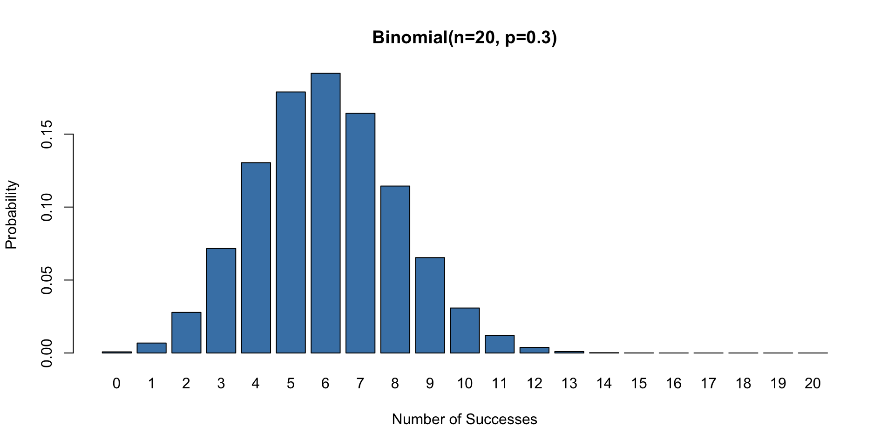
Chief AI Officer Program: ML Essentials
Machine Learning: From Probability to Prediction
Probability Distributions
Why Distributions Matter
- Machine learning is built on probability
- Distributions describe uncertainty in data
- Three fundamental distributions:
- Binomial: Binary outcomes (yes/no, win/lose)
- Poisson: Count data (arrivals, events)
- Normal: Continuous measurements (heights, returns)
Why Should Executives Care?
| Business Question | Distribution |
|---|---|
| Will the customer buy? | Binomial |
| How many orders today? | Poisson |
| What’s the forecast error? | Normal |
Choosing the right distribution is the first step in building a reliable model. Wrong distribution = wrong predictions!
Binomial Distribution
Models the number of successes in \(n\) independent trials, each with probability \(p\)
\[P(X=k) = \binom{n}{k} p^k(1-p)^{n-k}\]
Key Parameters:
- \(n\) = number of trials
- \(p\) = probability of success
- Mean = \(np\)
- Variance = \(np(1-p)\)
Examples: A/B test conversions, click-through rates, quality defects
NFL Patriots Coin Toss
The Patriots won 19 out of 25 coin tosses in 2014-15. How likely?
- There are 177,100 ways to arrange 19 wins in 25 games
- Each specific sequence has probability \(0.5^{25}\)
- Combined probability: 0.5% or odds of 199 to 1 against
Show R code
# "25 choose 19" = number of ways to pick 19 wins from 25 games
choose(25, 19)[1] 177100Show R code
# Probability = (ways to get 19 wins) × (probability of any specific sequence)
choose(25, 19) * 0.5^25[1] 0.005277991The “Law of Large Numbers” Perspective:
With 32 NFL teams over 20+ years, some team will have a suspicious streak!
Key insight: Probability of Patriots specifically = 0.5%. But probability that some team has a streak ≈ much higher!
Business lesson: When auditing for fraud or anomalies:
- Don’t just flag rare events
- Consider how many opportunities for rare events exist
- Adjust for “multiple comparisons”
Looking at enough data, you’ll always find something “unusual”
Predicting Premier League Goals
How many goals will a team score? Historical EPL data:
Show R code
epl <- read.csv("data/epl.csv")
epl[1:5, c("home_team_name", "away_team_name", "home_score", "guest_score")] home_team_name away_team_name home_score guest_score
1 Arsenal Liverpool 3 4
2 Bournemouth Manchester United 1 3
3 Burnley Swansea 0 1
4 Chelsea West Ham 2 1
5 Crystal Palace West Bromwich Albion 0 1Each row = one match with final scores.
The Business Problem:
Sports betting: $200+ billion industry.
Our approach:
- Analyze historical data
- Model goals as random events
- Estimate team strengths
- Simulate matches
Who uses this? FiveThirtyEight, ESPN, DraftKings, Betfair, team analytics
EPL Goals: Mean ≈ Variance
A key signature of Poisson data: the mean equals the variance.
- Teams score about 1.4 goals per match on average
- The variance is also ~1.4 — this is the Poisson fingerprint!
- If variance were much larger, we’d need a different model
Show R code
goals <- c(epl$home_score, epl$guest_score)
mean(goals) # Average goals per team per match[1] 1.4Show R code
var(goals) # Variance ≈ Mean suggests Poisson![1] 1.644796Model Diagnostics: Mean vs Variance
| Relationship | Suggests |
|---|---|
| Variance ≈ Mean | Poisson ✓ |
| Variance > Mean | Overdispersion (Negative Binomial) |
| Variance < Mean | Underdispersion (rare) |
Other Poisson Applications:
- Call center arrivals per hour
- Website clicks per minute
- Insurance claims per year
- Manufacturing defects per batch
- Emails received per day
Poisson is the “go-to” for count data!
Goals Follow a Poisson Distribution
Show R code
goals <- c(epl$home_score, epl$guest_score)
lambda <- mean(goals)
x <- 0:8
observed <- table(factor(goals, levels = x)) / length(goals)
expected <- dpois(x, lambda = lambda)
barplot(rbind(observed, expected), beside = TRUE,
names.arg = x, col = c("steelblue", "coral"),
xlab = "Goals Scored", ylab = "Proportion",
legend.text = c("Observed", "Poisson Model"))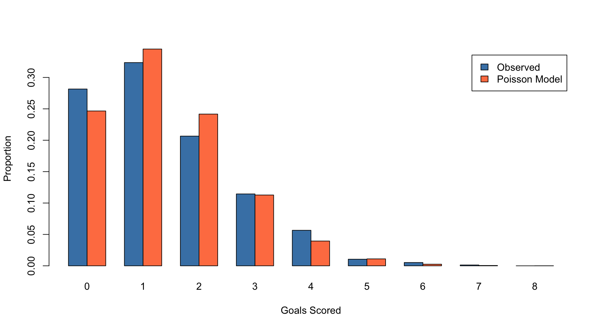
Model Validation:
The Poisson model (coral bars) fits the observed data (blue bars) remarkably well!
What this tells us:
- Goals are indeed rare, independent events
- The Poisson assumption is justified
- We can use this model for predictions
Slight discrepancy at 0 goals: Real matches have slightly fewer 0-0 draws than Poisson predicts (teams try harder when level!)
Poisson Distribution
Models count of random events: goals, arrivals, defects, clicks
\[P(X=k) = \frac{\lambda^k e^{-\lambda}}{k!}\]
- \(\lambda\) (lambda): expected rate of events
- Key property: Mean = Variance = \(\lambda\)
- Events occur independently at a constant average rate
Business Applications:
- Customer arrivals per hour
- Website clicks per day
- Manufacturing defects per batch
- Insurance claims per year
- Server requests per minute
If events are rare and independent, Poisson is your model!
Improving the Model: Team Strength
A single \(\lambda\) for all teams is too simple. Better model:
\[\lambda_{ij} = \text{Attack}_i \times \text{Defense}_j \times \text{HomeAdvantage}\]
- Attack: How good is team \(i\) at scoring?
- Defense: How weak is team \(j\) at defending?
- Home advantage: ~0.4 extra goals at home
This is how real sports analytics works:
- Estimate each team’s offensive/defensive strength from historical data
- Adjust for home/away effects
- Predict expected goals for each team
- Use Poisson to generate win/draw/loss probabilities
Same framework applies to:
- NBA point spreads
- NFL betting lines
- Cricket run predictions
- Baseball run expectations
Team-Specific \(\lambda\): Arsenal vs Liverpool
To predict a specific match, we estimate each team’s scoring rate:
- Arsenal’s attack: How many goals do they typically score at home?
- Liverpool’s defense: How many goals do they typically concede away?
- Adjustment: Scale by league average to get relative strength
For Arsenal vs Liverpool at home, we estimate Arsenal will score about 1.8 goals on average. Liverpool’s away \(\lambda\) would be calculated similarly.
Show R code
# Simple estimate: average goals scored and conceded
arsenal_attack <- mean(epl$home_score[epl$home_team_name == "Arsenal"])
liverpool_defense <- mean(epl$home_score[epl$away_team_name == "Liverpool"])
league_avg <- mean(goals)
# Arsenal's expected goals vs Liverpool (simplified)
lambda_arsenal <- arsenal_attack * (liverpool_defense / league_avg)
lambda_arsenal[1] 1.851998Monte Carlo Simulation
Once we have \(\lambda\) for each team, we can simulate the match thousands of times.
For Arsenal (\(\lambda=1.8\)) vs Liverpool (\(\lambda=1.5\)), running 10,000 simulations gives:
- Arsenal wins: ~42% of simulations
- Draw: ~24% of simulations
- Liverpool wins: ~34% of simulations
This is how betting companies set their odds!
Show R code
set.seed(42)
n_sims <- 10000
# Simulate Arsenal vs Liverpool
arsenal_goals <- rpois(n_sims, lambda = 1.8) # λ for Arsenal
liverpool_goals <- rpois(n_sims, lambda = 1.5) # λ for Liverpool
# Match outcomes
c(Arsenal_Win = mean(arsenal_goals > liverpool_goals),
Draw = mean(arsenal_goals == liverpool_goals),
Liverpool_Win = mean(arsenal_goals < liverpool_goals)) Arsenal_Win Draw Liverpool_Win
0.4538 0.2254 0.3208 Why Monte Carlo?
Each simulation draws random goals from Poisson distributions
- Run 10,000 simulations → get probability of each outcome
- Can extend to simulate entire season, league standings
- Same approach used by betting companies and analytics firms
This is how FiveThirtyEight and bookmakers build their models!
Monte Carlo Applications:
- Finance: Option pricing, portfolio risk (VaR)
- Insurance: Claim projections, reserve calculations
- Operations: Supply chain uncertainty, demand forecasting
- Engineering: Reliability analysis, quality control
- AI: Reinforcement learning, MCMC for Bayesian inference
When math is too hard, simulate!
Central Limit Theorem (CLT)
The most important theorem in statistics:
The average of many independent random events tends toward a Normal distribution, regardless of the original distribution.
Why it matters: Stock returns, measurement errors, test scores — all tend to be Normal because they’re sums of many small effects.
Practical Implications:
- Sample means are approximately Normal (even if data isn’t)
- Confidence intervals work because of CLT
- A/B testing relies on CLT for significance tests
- Quality control uses CLT for process monitoring
Rule of thumb: Sample size ≥ 30 usually sufficient for CLT to kick in
This is why the Normal distribution is everywhere!
CLT in Action: Michigan Election Polls
Suppose the true vote share in Michigan is 51%. What happens when we poll voters?
- Each voter is like a coin flip (vote A or B)
- Small samples are noisy; large samples converge to the truth
- The distribution of poll results becomes Normal
Show R code
set.seed(42)
true_p <- 0.51
# Poll of 10 voters
hist(replicate(1000, mean(rbinom(10, 1, true_p))), breaks = 20,
main = "Poll: 10 Voters", xlab = "Vote Share", col = "steelblue",
freq = FALSE, xlim = c(0.2, 0.8))
abline(v = true_p, col = "red", lwd = 2, lty = 2)
# Poll of 100 voters
hist(replicate(1000, mean(rbinom(100, 1, true_p))), breaks = 20,
main = "Poll: 100 Voters", xlab = "Vote Share", col = "steelblue",
freq = FALSE, xlim = c(0.2, 0.8))
abline(v = true_p, col = "red", lwd = 2, lty = 2)
# Poll of 1000 voters
hist(replicate(1000, mean(rbinom(1000, 1, true_p))), breaks = 20,
main = "Poll: 1000 Voters", xlab = "Vote Share", col = "steelblue",
freq = FALSE, xlim = c(0.2, 0.8))
abline(v = true_p, col = "red", lwd = 2, lty = 2)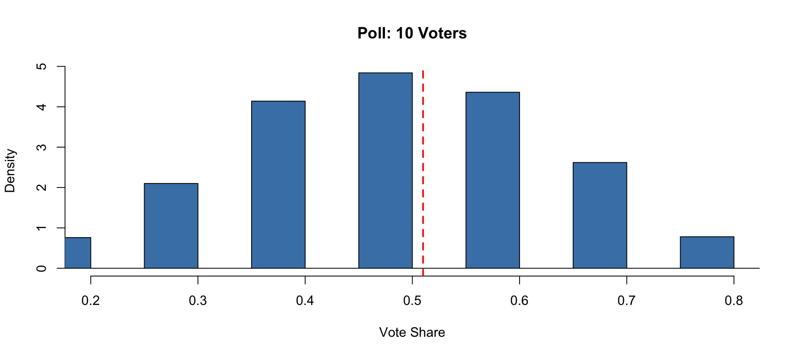
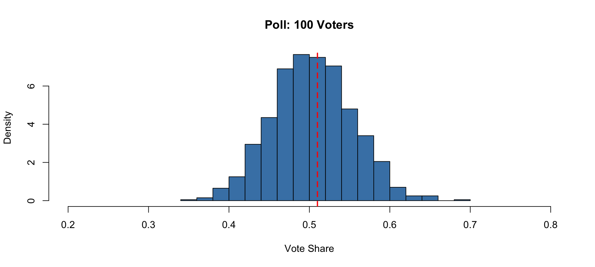
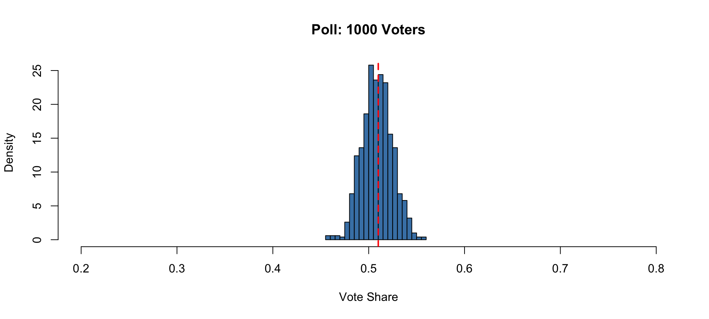
Larger samples → tighter Normal distribution around the true value (red line)
Normal Distribution
The “bell curve” — the most important distribution in statistics
The 68-95-99.7 Rule:
- 68% of data within 1 standard deviation
- 95% of data within 2 standard deviations
- 99.7% of data within 3 standard deviations
Why it’s everywhere: Central Limit Theorem guarantees that averages of many random events become Normal
Applications: Quality control, financial risk, test scores, measurement error
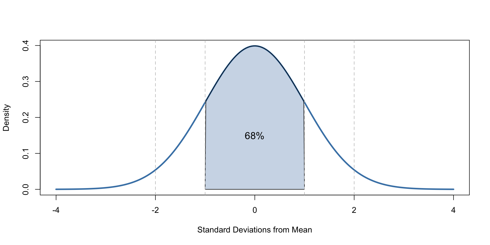
Normal: Heights of Adults
Male heights follow a Normal distribution: mean = 70 inches, sd = 3 inches
- 68% of men are between 67-73 inches (within 1 sd)
- The 95th percentile is about 75 inches — only 5% are taller
Show R code
# What proportion are between 67 and 73 inches (+/- 1 sd)?
pnorm(73, mean = 70, sd = 3) - pnorm(67, mean = 70, sd = 3)[1] 0.6826895Show R code
# What height is taller than 95% of men?
qnorm(0.95, mean = 70, sd = 3)[1] 74.93456R Functions for Normal Distribution:
| Function | Purpose | Example |
|---|---|---|
pnorm() |
Probability ≤ x | P(height ≤ 73) |
qnorm() |
Find percentile | 95th percentile |
dnorm() |
Density at x | Height of curve |
rnorm() |
Random samples | Simulate data |
Business Applications:
- Setting size ranges for products
- Establishing “normal” ranges for KPIs
- Identifying outliers (> 2-3 sd)
- Quality control limits
The 1987 Stock Market Crash: A 5-Sigma Event
How extreme was the October 1987 crash of -21.76%?
- Prior to crash: \(\mu = 1.2\%\), \(\sigma = 4.3\%\) → Z-score = \(\frac{-21.76 - 1.2}{4.3} = -5.34\)
- Under Normal model: probability = 1 in 20 million (once every 130,000 years!)
- Yet 5+ sigma events happened in 1987, 2008, and 2020
Conclusion: The model is wrong — stock returns have “fat tails.” Banks using Normal-based VaR dramatically underestimate risk.
Show R code
pnorm(-5.34) # Probability of -5.34 sigma event[1] 4.647329e-08Fat Tails: Reality vs Normal Model
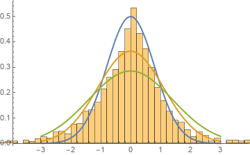
The Problem with Normal Assumptions:
Stock returns have more extreme events than the Normal distribution predicts.
| Event | Normal Probability | Actually Happened |
|---|---|---|
| 1987 Crash (-22%) | 1 in \(10^{160}\) | Yes |
| 2008 Crisis | “Impossible” | Yes |
| 2020 COVID Crash | “Impossible” | Yes |
Implications for Risk Management:
- VaR models underestimate tail risk
- Need “fat-tailed” distributions (t-distribution, etc.)
- Stress testing is essential
Linear Regression
What is Regression?
Finding the relationship between variables
\[y = \beta_0 + \beta_1 x + \epsilon\]
- \(\beta_0\): intercept (baseline value)
- \(\beta_1\): slope (change in \(y\) per unit change in \(x\))
- \(\epsilon\): unexplained variation
Goal: Minimize sum of squared prediction errors
Business Questions Regression Answers:
- How much does price affect sales?
- What’s the ROI of advertising spend?
- How does experience affect salary?
- What drives customer lifetime value?
- How does weather affect demand?
Regression quantifies relationships and enables prediction.
Simple Example: House Prices
Using Saratoga County housing data, we fit a model:
Price = f(Living Area)
- Intercept: Base price of ~$13,000 (land value)
- Slope: Each additional square foot adds ~$113 to the price
A 2,000 sq ft house: $13K + (2000 × $113) = $239,000
Show R code
d <- read.csv("data/SaratogaHouses.csv")
model <- lm(price ~ livingArea, data = d)
coef(model)(Intercept) livingArea
13439.3940 113.1225 Interpreting Coefficients:
| Coefficient | Meaning |
|---|---|
| Intercept ($13K) | Value of land without house |
| Slope ($113/sqft) | Price increase per sqft |
Making Predictions:
\[\text{Price} = 13,439 + 113 \times \text{SqFt}\]
| House Size | Predicted Price |
|---|---|
| 1,500 sqft | $183,000 |
| 2,500 sqft | $296,000 |
| 3,500 sqft | $409,000 |
Visualizing the Fit
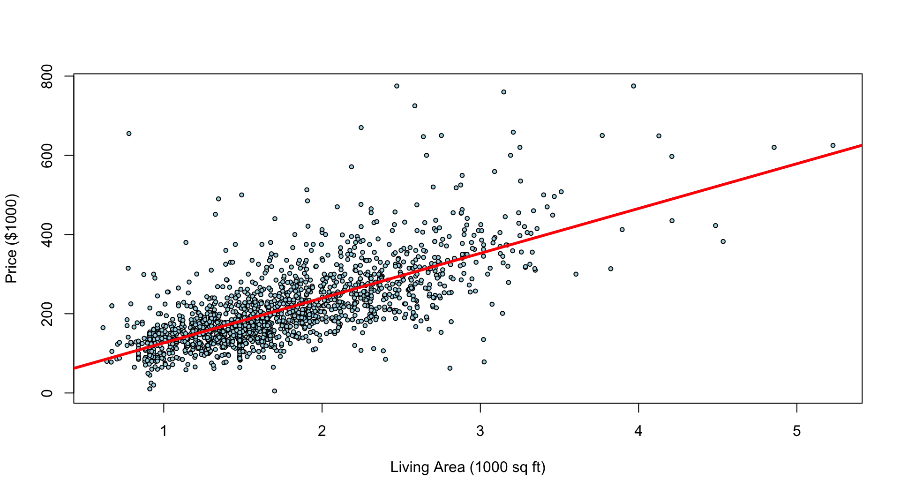
What the plot shows:
- Each blue dot is a house
- The red line is our prediction
- Vertical distance from dot to line = prediction error
Key observations:
- Strong positive relationship
- More scatter at higher prices (heteroskedasticity)
- Some outliers (expensive small houses, cheap large houses)
The line minimizes the sum of squared vertical distances
Google vs S&P 500 (CAPM)
The Capital Asset Pricing Model (CAPM) asks: Does a stock follow the market or beat it?
\[\text{Google Return} = \alpha + \beta \times \text{Market Return}\]
- \(\beta\) (beta): How volatile is the stock relative to the market?
- \(\alpha\) (alpha): Does the stock outperform after adjusting for risk?
Show R code
library(quantmod)
getSymbols(c("GOOG", "SPY"), from = "2017-01-01", to = "2023-12-31") |> invisible()
goog <- as.numeric(dailyReturn(GOOG))
spy <- as.numeric(dailyReturn(SPY))
model <- lm(goog ~ spy)
print(model)
Call:
lm(formula = goog ~ spy)
Coefficients:
(Intercept) spy
0.0003211 1.1705808 Google vs S&P 500: CAPM Results
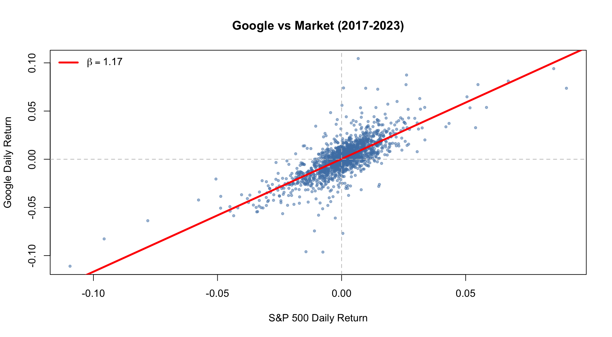
Our Findings:
- Beta (\(\beta = 1.01\)): Google moves 1:1 with market
- Alpha (\(\alpha \approx 0\)): No significant outperformance (\(p = 0.06\))
| Beta | Interpretation |
|---|---|
| \(\beta < 1\) | Less volatile (utilities, healthcare) |
| \(\beta = 1\) | Moves with market (index funds) |
| \(\beta > 1\) | More volatile (tech, small caps) |
Conclusion: Google tracked the market without consistent alpha in 2017-2023. High beta = higher risk, potentially higher reward.
Orange Juice: Price & Advertising
How does advertising affect price sensitivity? We model sales as a function of price and whether the product was featured in ads.
Key finding: The interaction term (log(price):feat) is negative and significant — advertising changes how customers respond to price!
Show R code
oj <- read.csv("data/oj.csv")
model <- lm(logmove ~ log(price) * feat, data = oj)
tidy(model) |> select(term, estimate, p.value) |> kable(digits = 3)| term | estimate | p.value |
|---|---|---|
| (Intercept) | 9.659 | 0 |
| log(price) | -0.958 | 0 |
| feat | 1.714 | 0 |
| log(price):feat | -0.977 | 0 |
The Advertising Paradox
Finding: Advertising increases price sensitivity
| Condition | Price Elasticity |
|---|---|
| No advertising | -0.96 |
| With advertising | -0.96 + (-0.98) = -1.94 |
Why? Ads coincide with promotions → attract price-sensitive shoppers
Key Lessons:
Correlation ≠ Causation: Ads don’t cause sensitivity; they coincide with promotions
Selection effects: Who responds to ads? Price hunters!
Confounding variables: Promotions happen during ad campaigns
Managerial insight: Don’t blame advertising for price sensitivity — it’s the promotion strategy
Always ask: What’s really driving the relationship?
Logistic Regression
From Regression to Classification
What if the outcome is yes/no?
\[P(y=1 \mid x) = \frac{1}{1 + e^{-\beta^T x}}\]
Why not just use linear regression?
- Linear regression can predict values < 0 or > 1
- Probabilities must be between 0 and 1
- Logistic function “squashes” any input to (0, 1)
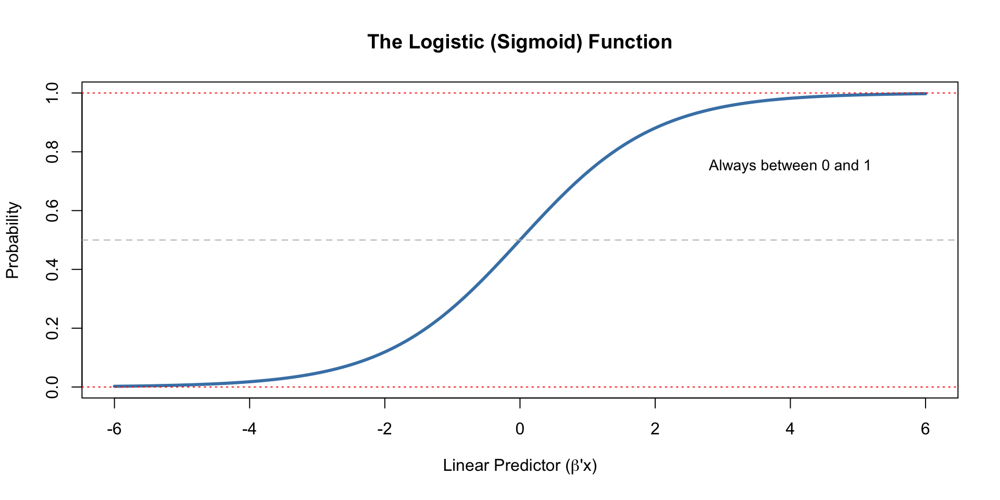
NBA Point Spread Example
Can Vegas point spreads predict game outcomes? We fit a logistic regression using historical NBA data.
Show R code
NBA <- read.csv("data/NBAspread.csv")
model <- glm(favwin ~ spread - 1, family = binomial, data = NBA)
tidy(model) |> kable(digits = 3)| term | estimate | std.error | statistic | p.value |
|---|---|---|---|---|
| spread | 0.156 | 0.014 | 11.332 | 0 |
Interpretation: For each additional point in the spread, log-odds of favorite winning increases by 0.16. The p-value < 0.001 confirms spreads are highly predictive.
Making Predictions
Using our model, we can predict win probability for any point spread:
| Spread | P(Favorite Wins) |
|---|---|
| 4 points | 65% |
| 8 points | 78% |
| 12 points | 87% |
Show R code
predict(model, newdata = data.frame(spread = c(4, 8)), type = "response") 1 2
0.6511238 0.7769474 Same approach used for: credit scoring, churn prediction, marketing response, fraud detection — any binary outcome.
Confusion Matrix
How accurate is our model? The confusion matrix shows predictions vs. actual outcomes.
Show R code
pred <- predict(model, type = "response") > 0.5
table(Actual = NBA$favwin, Predicted = as.integer(pred)) Predicted
Actual 1
0 131
1 422Our model achieves about 66% accuracy — better than a coin flip!
Reading the Matrix:
| Pred: 0 | Pred: 1 | |
|---|---|---|
| Actual: 0 | TN (correct!) | FP (oops) |
| Actual: 1 | FN (oops) | TP (correct!) |
Sports Betting Reality:
- 66% accuracy sounds good, but…
- Vegas takes ~10% commission (“vig”)
- Need ~52.4% accuracy just to break even
- Edge of 13.6% is excellent if it holds!
But past performance ≠ future results
Understanding the Confusion Matrix
| Predicted: Win | Predicted: Lose | |
|---|---|---|
| Actual: Win | True Positive (TP) | False Negative (FN) |
| Actual: Lose | False Positive (FP) | True Negative (TN) |
Key Metrics:
- Accuracy = (TP + TN) / Total — overall correctness
- Precision = TP / (TP + FP) — “Of predicted wins, how many were right?”
- Recall = TP / (TP + FN) — “Of actual wins, how many did we catch?”
Caution: Accuracy can mislead! A spam filter predicting “not spam” for everything has 99% accuracy but catches zero spam. Choose metrics based on business costs.
ROC Curve: The Trade-off
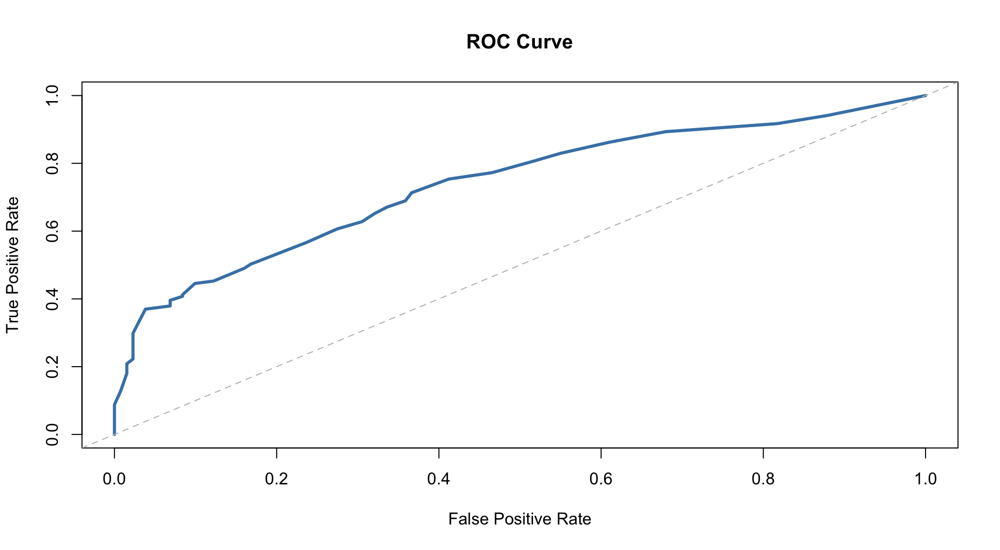
Understanding the ROC Curve:
- X-axis: False Positive Rate (false alarms)
- Y-axis: True Positive Rate (catches)
- Diagonal: Random guessing (AUC = 0.5)
- Upper-left corner: Perfect classifier
Area Under Curve (AUC):
| AUC | Model Quality |
|---|---|
| 0.5 | Random (useless) |
| 0.6-0.7 | Poor |
| 0.7-0.8 | Fair |
| 0.8-0.9 | Good |
| 0.9+ | Excellent |
Choosing the Right Threshold
The optimal threshold depends on business costs:
- Fraud detection: Low threshold (catch more fraud, accept false alarms)
- Medical screening: Low threshold (don’t miss disease)
- Spam filter: Higher threshold (don’t lose important emails)
There is no universal “correct” threshold
Framework for Threshold Selection:
- Quantify costs: What’s the cost of FP vs FN?
- Calculate expected cost at each threshold
- Choose threshold that minimizes total expected cost
Example — Credit Card Fraud:
- False Positive cost: $10 (customer inconvenience)
- False Negative cost: $500 (fraud loss)
- Optimal threshold: Much lower than 0.5!
Let business economics guide your model decisions
Key Takeaways
Summary
| Concept | Key Insight |
|---|---|
| Distributions | Binomial (binary), Poisson (counts), Normal (continuous) |
| Poisson | Mean = Variance — the fingerprint of count data |
| Normal | CLT makes it universal for averages |
| Linear Regression | Coefficients = effect sizes |
| Logistic Regression | Outputs probabilities for classification |
| ROC/AUC | Trade-off between false positives and false negatives |
| Threshold | Business costs should drive the choice |
Statistics is the science of decision-making under uncertainty
Supplemental Reading
Online Articles:
- The Surprising Power of Online Experiments - HBR
- Machine Learning, Explained - MIT Sloan
Key Insight from HBR: A simple A/B test at Bing generated over $100M annually by testing a “low priority” idea
Books for Further Study:
- The Signal and the Noise — Nate Silver
- Thinking, Fast and Slow — Daniel Kahneman
- Naked Statistics — Charles Wheelan
- Data Science for Business — Provost & Fawcett
Online Courses:
- Andrew Ng’s Machine Learning (Coursera)
- Statistical Learning (Stanford Online)
- Fast.ai Practical Deep Learning